GridView의 비활성화 여부를 지정하는 예제입니다. GirdView, Column, Row, Cell 단위로 지정할 수 있습니다. 이 기능은 GridView의 함수 setDisabled 호출하여 사용할 수 있습니다.
GridView 비활성화 여부 지정하기
셀의 비활성화 여부 지정하기
컬럼의 비활성화 여부 지정하기
로우의 비활성화 여부 지정하기
영역 [GridView 비활성화 여부 지정하기]의 GridView를 확인합니다.
GridView의 모든 셀이 활성화 되어있습니다. (모든 셀 수정 가능)
[브라우저(Chrome) 실행 예시]
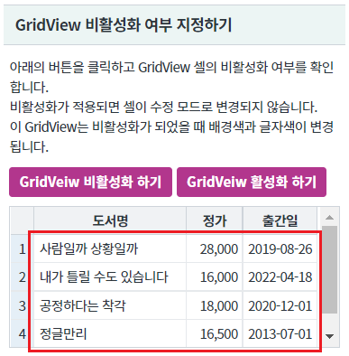
버튼 GridVeiw 비활성화 하기를 클릭합니다.
GridVeiw가 비활성화 됩니다.
셀의 배경색과 글자색이 변경됩니다.
(또한 셀을 더블 클릭하면 수정 모드로 진입하지 않습니다.)
[브라우저(Chrome) 실행 예시]
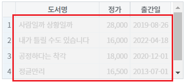
버튼 GridVeiw 활성화 하기를 클릭합니다.
GridVeiw가 활성화 됩니다.
셀의 배경색과 글자색이 초기 설정값으로 변경됩니다.
(또한 셀을 더블 클릭하면 수정 모드로 진입합니다.)
[브라우저(Chrome) 실행 예시]
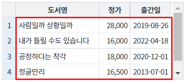
영역 [GridView 셀의 비활성화 여부 지정하기]의 GridView를 확인합니다.
GridView의 모든 셀이 활성화 되어있습니다. (모든 셀 수정 가능)
[브라우저(Chrome) 실행 예시]
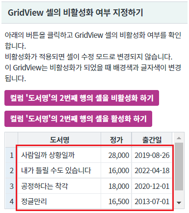
버튼 컬럼 '도서명'의 2번째 행의 셀을 비활성화 하기를 클릭합니다.
컬럼 '도서명'의 2번째 행의 셀이 비활성화됩니다.
셀의 배경색과 글자색이 변경됩니다.
(또한 셀을 더블 클릭하면 수정 모드로 진입하지 않습니다.)
[브라우저(Chrome) 실행 예시]
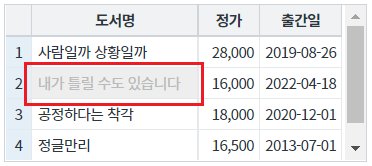
버튼 컬럼 '도서명'의 2번째 행의 셀을 활성화 하기를 클릭합니다.
컬럼 '도서명'의 2번째 행의 셀이 활성화됩니다.
셀의 배경색과 글자색이 초기 설정값으로 변경됩니다.
(또한 셀을 더블 클릭하면 수정 모드로 진입합니다.)
[브라우저(Chrome) 실행 예시]
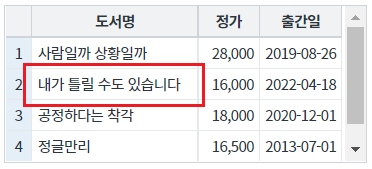
영역 [GridView 컬럼의 비활성화 여부 지정하기]의 GridView를 확인합니다.
GridView의 모든 셀이 활성화 되어있습니다. (모든 셀 수정 가능)
[브라우저(Chrome) 실행 예시]
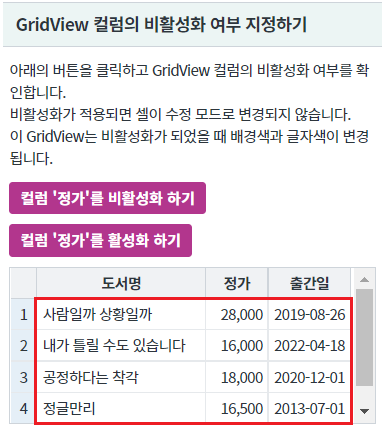
버튼 컬럼 '정가'를 비활성화 하기를 클릭합니다.
컬럼 '정가'가 비활성화됩니다.
셀의 배경색과 글자색이 변경됩니다.
(또한 셀을 더블 클릭하면 수정 모드로 진입하지 않습니다.)
[브라우저(Chrome) 실행 예시]
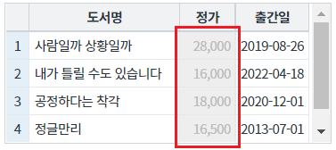
버튼 컬럼 '정가'를 활성화 하기를 클릭합니다.
컬럼 '정가'가 활성화됩니다.
셀의 배경색과 글자색이 초기 설정값으로 변경됩니다.
(또한 셀을 더블 클릭하면 수정 모드로 진입합니다.)
[브라우저(Chrome) 실행 예시]
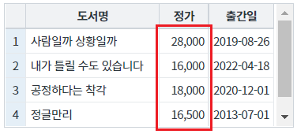
영역 [GridView 로우의 비활성화 여부 지정하기]의 GridView를 확인합니다.
GridView의 모든 셀이 활성화 되어있습니다. (모든 셀 수정 가능)
[브라우저(Chrome) 실행 예시]
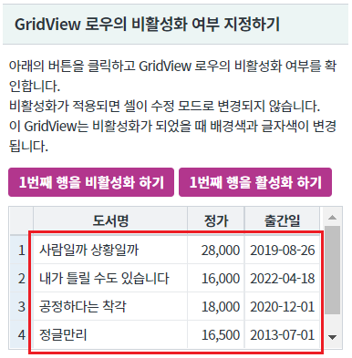
버튼 1번째 행을 비활성화 하기를 클릭합니다.
1번째 행이 비활성화됩니다.
셀의 배경색과 글자색이 변경됩니다.
(또한 셀을 더블 클릭하면 수정 모드로 진입하지 않습니다.)
[브라우저(Chrome) 실행 예시]
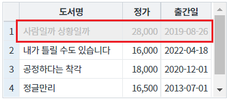
버튼 1번째 행을 활성화 하기를 클릭합니다.
1번째 행이 활성화됩니다.
셀의 배경색과 글자색이 초기 설정값으로 변경됩니다.
(또한 셀을 더블 클릭하면 수정 모드로 진입합니다.)
[브라우저(Chrome) 실행 예시]
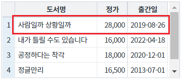
GridView의 함수 setDisabled을 사용합니다.
[소스 코드 예시]
//예제 파일의 스크립트 "scwin.btn_ex1_1_onclick" 또는 "scwin.btn_ex1_2_onclick"를 참고하세요. //GridView 비활성화 grd_exam1.setDisabled("grid", true); //GridView 비활성화 grd_exam1.setDisabled("grid", false);
GridView의 함수 setDisabled을 사용합니다.
[소스 코드 예시]
//예제 파일의 스크립트 "scwin.btn_ex2_1_onclick" 또는 "scwin.btn_ex2_2_onclick"를 참고하세요. //GridView 'grd_exam2'의 컬럼 '도서명'의 2번째 행의 셀을 비활성화 하기 grd_exam2.setDisabled("cell", 1, "book_name", true); //GridView 'grd_exam2'의 컬럼 '도서명'의 2번째 행의 셀을 활성화 하기 grd_exam2.setDisabled("cell", 1, "book_name", false);
GridView의 함수 setDisabled을 사용합니다.
[소스 코드 예시]
//예제 파일의 스크립트 "scwin.btn_ex3_1_onclick" 또는 "scwin.btn_ex3_2_onclick"를 참고하세요. //GridView 'grd_exam3'의 컬럼 '정가'를 비활성화 하기 grd_exam3.setDisabled("column", "price", true); //GridView 'grd_exam3'의 컬럼 '정가'를 활성화 하기 grd_exam3.setDisabled("column", "price", false);
GridView의 함수 setDisabled을 사용합니다.
[소스 코드 예시]
//예제 파일의 스크립트 "scwin.btn_ex4_1_onclick" 또는 "scwin.btn_ex4_2_onclick"를 참고하세요. //GridView 'grd_exam4'의 1번째 행을 비활성화 하기 grd_exam4.setDisabled("row", 0, true); //GridView 'grd_exam4'의 1번째 행을 활성화 하기 grd_exam4.setDisabled("row", 0, false);
이 예제에서는 비활성화 여부 지정에 대한 구현 예시만 작성되어 있습니다.
비활성화 된 셀의 배경색과 글자색을 지정하는 예제는 [GridView] 셀이 비활성화되었을 때의 셀 배경색, 글자색 지정하기에 작성되어 있습니다.
setDisabled( type , rowIndex , colIndex , disableFlag )
setCellDisabled( rowIndex , colIndex , disabled )
setColumnDisabled( colIndex , disabled )
setRowDisabled( rowIndex , disableFlag )
disabledBackgroundColor
disabledFontColor
[웹스퀘어5 SP5 개발 가이드] GridView
링크 : https://docs1.inswave.com/sp5_user_guide/bc10c1b82c9a2a0b#e1c4658baf7e726f